Research aid only, not financial advice. Limit-order style entries; stop is beyond the sweep.
Start the server (run_daily.bat) to see live P/L.
252 setups tracked · pending 16 · open 45 · closed 118 · expired 73
| Group | Closed | Wins | Win rate | Avg R |
|---|---|---|---|---|
| All | 118 | 32 | 27% | -0.29 |
| Buys | 78 | 22 | 28% | -0.26 |
| Sells | 40 | 10 | 25% | -0.35 |
| 1h | 102 | 29 | 28% | -0.28 |
| 4h | 16 | 3 | 19% | -0.32 |
| Score 70+ | 41 | 14 | 34% | -0.04 |
| Score under 70 | 77 | 18 | 23% | -0.42 |
| STANDARD v1 | 8 | 3 | 38% | 0.37 |
| Not standard | 110 | 29 | 26% | -0.34 |
| Asia (00-07 UTC) | 18 | 4 | 22% | -0.3 |
| London (07-13 UTC) | 43 | 13 | 30% | -0.23 |
| New York (13-21 UTC) | 44 | 12 | 27% | -0.31 |
| Late (21-24 UTC) | 13 | 3 | 23% | -0.4 |
| Added | Coin | TF | Side | Score | Entry | State | R |
|---|---|---|---|---|---|---|---|
| 2026-10-04 04:14 | S | 4h | BUY | 80 | 0.03954 | pending | |
| 2026-10-04 04:14 | XLM | 1h | BUY | 53 | 0.21355 | pending | |
| 2026-10-04 03:39 | ESP | 1h | BUY | 65 | 0.10335 | pending | |
| 2026-10-04 02:29 | QNT | 1h | BUY | 80 | 261.725 | pending | |
| 2026-10-04 02:29 | SAGA | 1h | BUY | 60 | 0.022565 | expired | |
| 2026-10-04 00:10 | BCH | 4h | BUY | 60 | 312.95 | pending | |
| 2026-10-04 00:10 | DASH | 1h | BUY | 55 | 59.105 | open | |
| 2026-10-03 22:31 | TRX | 1h | SELL | 75 | 0.3364 | pending | |
| 2026-10-03 21:20 | NEAR | 1h | BUY | 75 | 4.7205 | pending | |
| 2026-10-03 20:10 | BMT | 4h | BUY | 80 | 0.01908 | open | |
| 2026-10-03 20:10 | BNB | 4h | BUY | 65 | 773.365 | pending | |
| 2026-10-03 19:34 | ENA | 1h | BUY | 85 | 0.23495 | pending | |
| 2026-10-03 18:24 | MOVR | 1h | BUY | 75 | 1.882 | open | |
| 2026-10-03 17:20 | MEGA | 1h | BUY | 74 | 0.047805 | pending | |
| 2026-10-03 16:12 | AXS | 4h | BUY | 73 | 1.186 | expired | |
| 2026-10-03 16:12 | OP | 4h | BUY | 60 | 0.12835 | pending | |
| 2026-10-03 16:12 | MEGA | 1h | BUY | 59 | 0.046795 | expired | |
| 2026-10-03 16:12 | RENDER | 4h | BUY | 55 | 1.9475 | open | |
| 2026-10-03 15:03 | VIRTUAL | 1h | BUY | 64 | 0.7759 | pending | |
| 2026-10-03 12:17 | ONE | 4h | BUY | 65 | 0.002287 | pending | |
| 2026-10-03 12:17 | TIA | 1h | BUY | 60 | 0.4505 | expired | |
| 2026-10-03 11:06 | VIRTUAL | 1h | BUY | 65 | 0.76705 | expired | |
| 2026-10-03 10:31 | ZRO | 1h | BUY | 80 | 1.7985 | expired | |
| 2026-10-03 08:10 | RAY | 4h | BUY | 75 | 1.9451 | pending | |
| 2026-10-03 07:01 | MUBARAK | 1h | BUY | 75 | 0.061455 | win | 1.49 |
| 2026-10-03 07:01 | RAY | 1h | BUY | 60 | 1.97915 | pending | |
| 2026-10-03 06:27 | ALICE | 1h | BUY | 85 | 0.1769 | open | |
| 2026-10-03 04:12 | MANA | 4h | BUY | 64 | 0.0938 | expired | |
| 2026-10-03 04:12 | FIL | 1h | BUY | 60 | 1.0464 | open | |
| 2026-10-03 04:12 | SUPER | 1h | BUY | 59 | 0.2299 | expired |
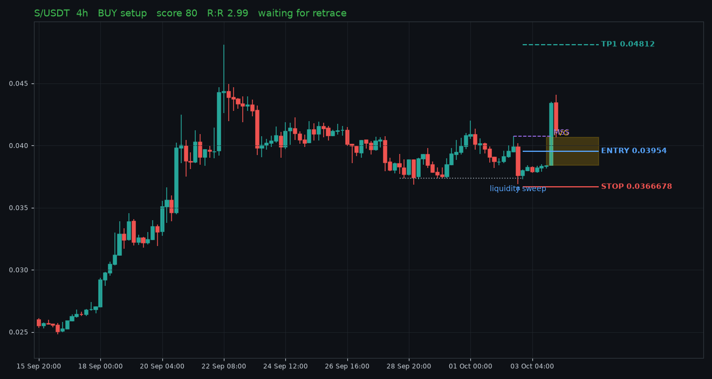
Swept sell-side liquidity at 0.03738 and closed back above it, then broke structure at 0.04073. Entry at the FVG (0.03841-0.04067). 1D bias: bull. In discount.
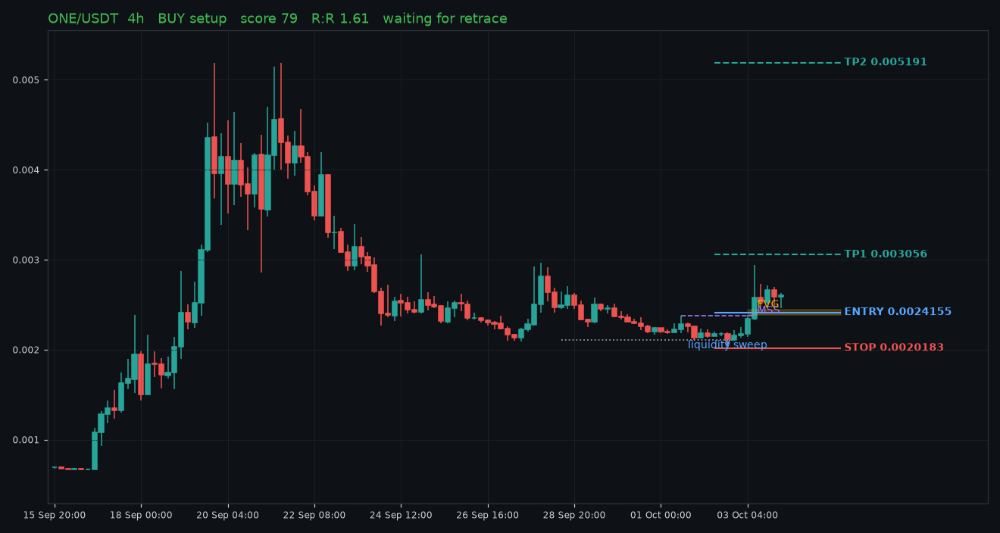
Swept sell-side liquidity at 0.00211 and closed back above it, then broke structure at 0.002375. Entry at the FVG (0.00239-0.002441). 1D bias: bull. In discount.
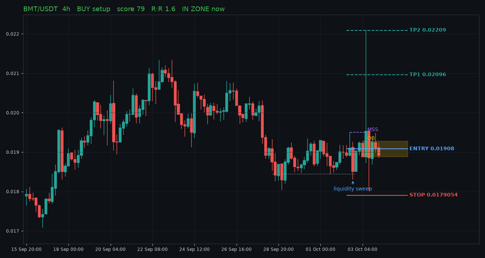
Swept sell-side liquidity at 0.01844 and closed back above it, then broke structure at 0.0195. Entry at the OB (0.01888-0.01928). 1D bias: bull. In discount.
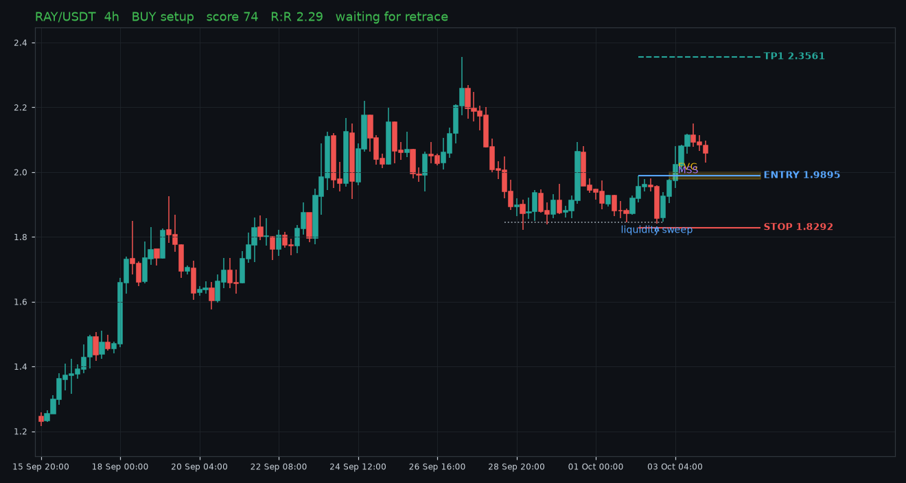
Swept sell-side liquidity at 1.8457 and closed back above it, then broke structure at 1.9898. Entry at the FVG (1.9788-2.0001). 1D bias: bull. In discount.
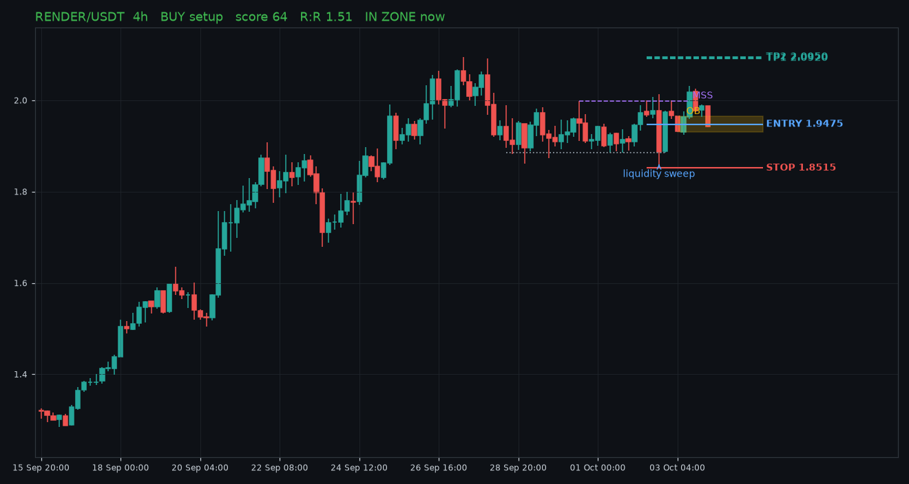
Swept sell-side liquidity at 1.8860 and closed back above it, then broke structure at 1.9990. Entry at the OB (1.9300-1.9650). 1D bias: bull. Not in ideal half of range.
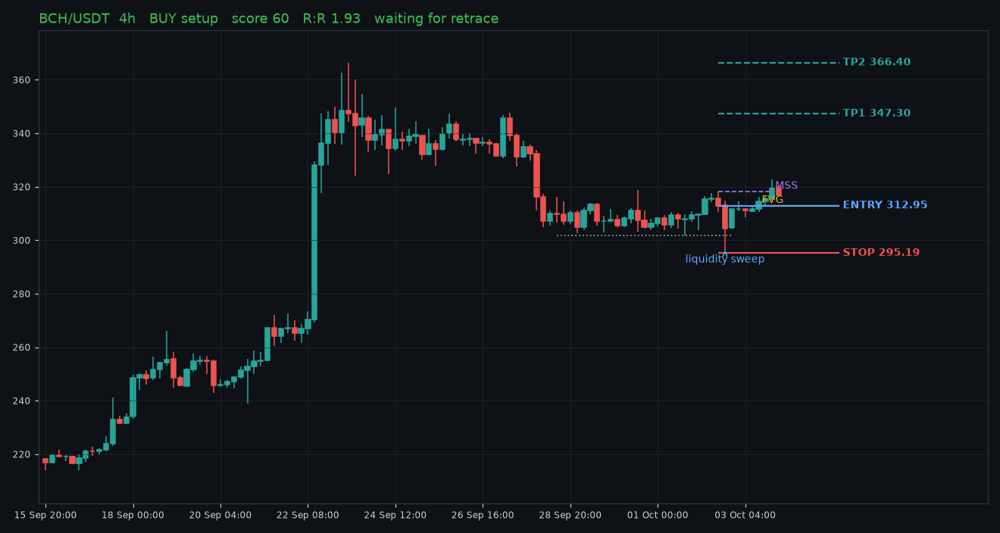
Swept sell-side liquidity at 301.70 and closed back above it, then broke structure at 318.30. Entry at the FVG (312.90-313.00). 1D bias: bull. Not in ideal half of range.
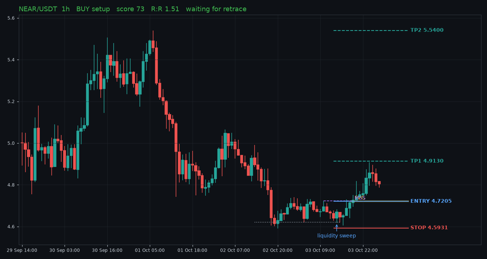
Swept sell-side liquidity at 4.6210 and closed back above it, then broke structure at 4.7230. Entry at the FVG (4.7170-4.7240). 1D bias: bull. In discount.
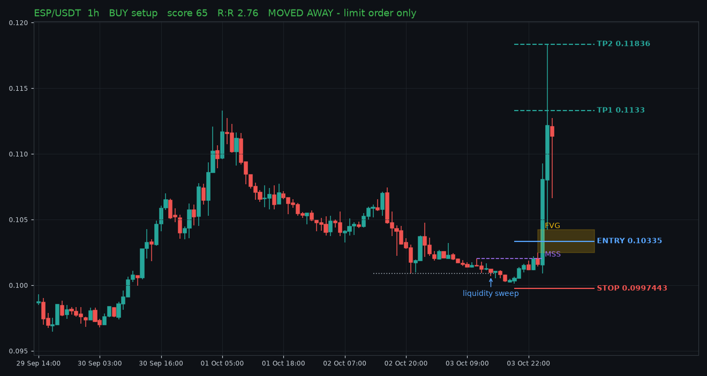
Swept sell-side liquidity at 0.10092 and closed back above it, then broke structure at 0.10205. Entry at the FVG (0.10248-0.10422). 1D bias: bull. In discount.
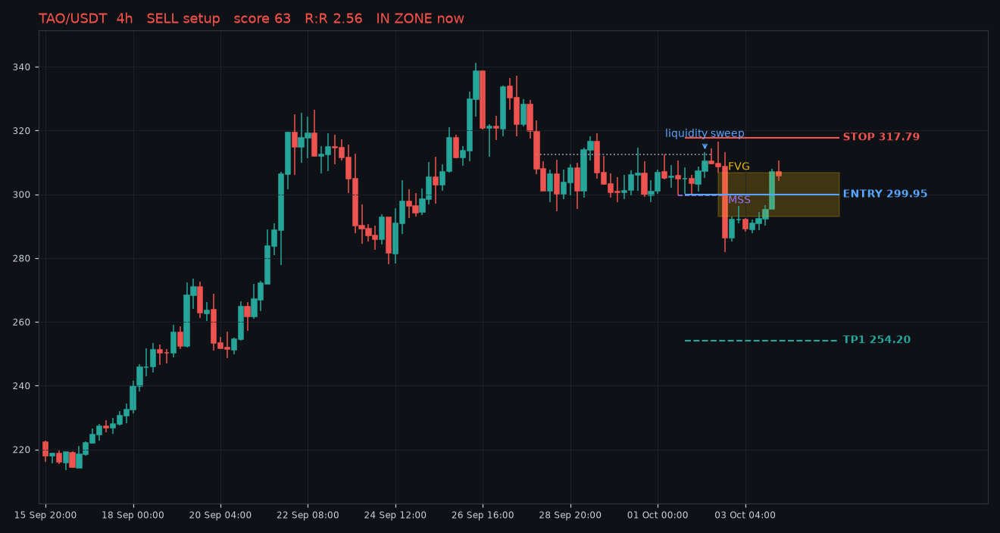
Swept buy-side liquidity at 312.40 and closed back below it, then broke structure at 299.70. Entry at the FVG (293.00-306.90). 1D bias: bull. In premium.
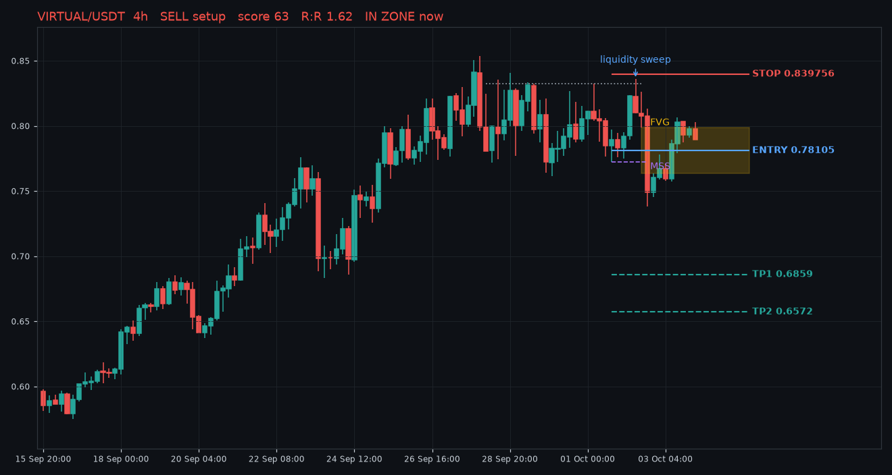
Swept buy-side liquidity at 0.8324 and closed back below it, then broke structure at 0.7722. Entry at the FVG (0.7633-0.7988). 1D bias: bull. In premium.
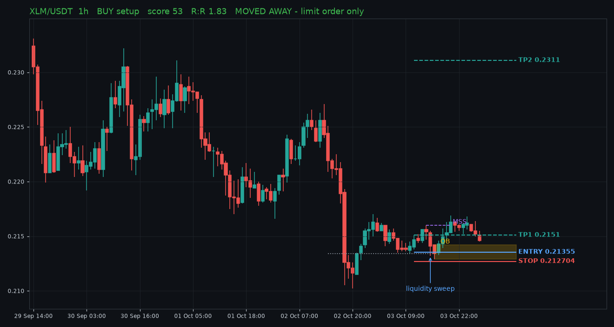
Swept sell-side liquidity at 0.2134 and closed back above it, then broke structure at 0.216. Entry at the OB (0.2129-0.2142). 1D bias: bull. In discount.